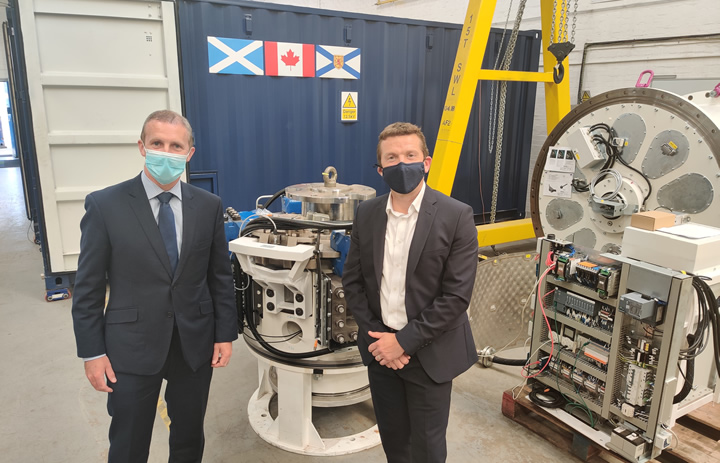

Two million VOLT sparks Scottish tidal energy scale up
TIDAL energy leader Nova Innovation has been awarded a £2 million cash injection from the Scottish Government to advance tidal turbine manufacturing to a global level.
The funding, delivered through Scottish Enterprise, is directed at Nova’s VOLT (VOlume Manufacturing and Logistics for Tidal Energy) project that will develop the first European assembly line to mass manufacture tidal turbines, and trial innovative techniques and tools to ship, deploy and monitor turbines around the world – meeting the challenge of the climate emergency.
The project will examine how to improve turbine performance, logistics for mass manufacture, and develop new techniques to ensure cost-effective delivery of tidal turbines. VOLT will also deliver an adaptable Remote Observation Platform (ROP) for rapid environmental monitoring of tidal energy sites.

Simon Forrest, CEO of Nova Innovation, said:
“We would like to thank the Scottish Government for their swift, high-impact support in helping secure overseas contracts. This support is significant and very welcome as it sees Nova and the wider sector shift onto an industrial footing. It is an endorsement of Nova’s global ambition to transform the power of our seas into clean, predictable energy, empowering coastal communities all around the world.
“Nova has an exceptional track record for delivery, and we look forward to successfully delivering the VOLT project - making tidal energy mainstream worldwide.”
Nova Innovation’s turbines have been successfully powering the Shetland grid for over five years and will soon be deployed in North America and mainland Europe. In delivering VOLT, Nova will demonstrate what is required to efficiently scale up the production of tidal energy devices across the world.
Tidal energy costs are falling rapidly as the sector scales up. It offers a competitive alternative to diesel generation in many markets and will be cheaper than nuclear by 2030. The global market size of tidal energy by 2050 could be up to £126 billion.
Michael Matheson, Cabinet Secretary for Net Zero in the Scottish Government, visited Nova’s headquarters in Edinburgh this week following the announcement.
He said:
“With our abundant natural resources and expertise, Scotland is ideally-placed to harness the enormous global market for marine energy whilst helping deliver a net-zero economy both here and across the world. That’s why we are determined to help the sector grow and develop.
“The VOLT project marks an important milestone in commercialising the sector, and I look forward to Nova Innovation capitalising on this funding to drive forward what is an incredibly exciting opportunity to advance tidal energy’s potential.”
The VOLT project will run from 2021 to 2023.